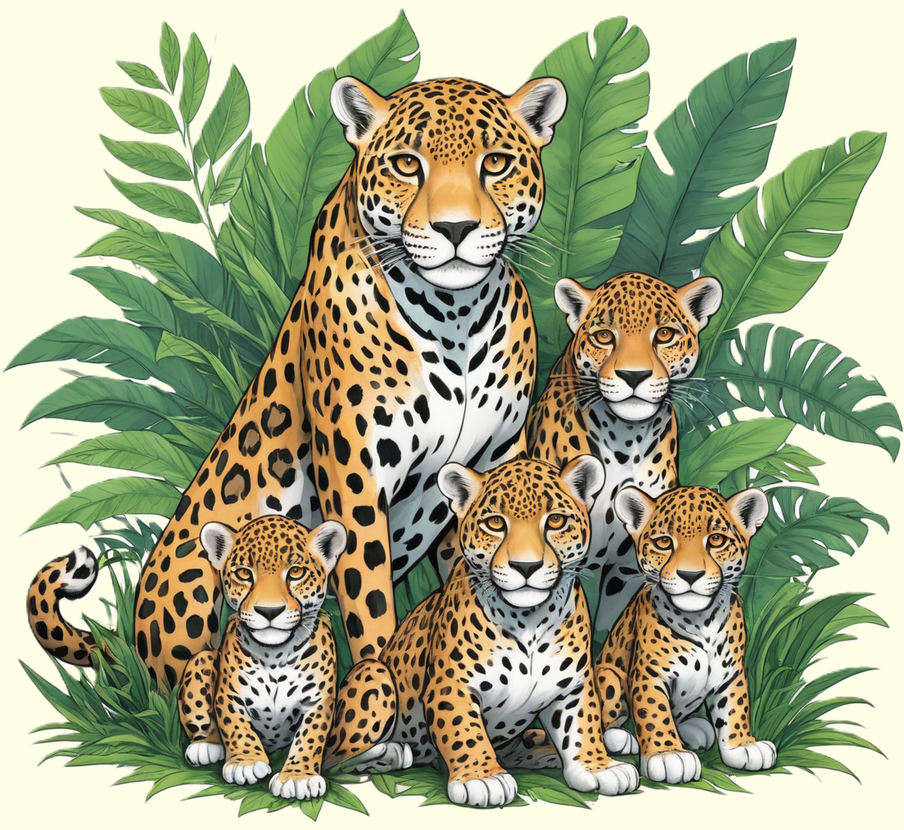

Der Jaguar, ein eleganter Raubkatzenbewohner der Regenwälder, fasziniert mit seinem gefleckten Fell und seiner kraftvollen Erscheinung.
Erkunde die fesselnde Welt dieser majestätischen Tiere und erfahre, wie sie in den dichten Dschungeln Südmerikas leben.

Meister des Dschungels
Der Jaguar, Panthera onca, ist eine imposante Raubkatze, die in den Regenwäldern, Sümpfen und Grasländern Amerikas heimisch ist. Mit seinem muskulösen Körperbau, dem charakteristischen gefleckten Fell und dem kräftigen Kopf ist der Jaguar ein beeindruckendes Tier. Die Flecken auf seinem Fell dienen als Tarnung in seinem natürlichen Lebensraum und helfen ihm, sich unbemerkt an seine Beute heranzuschleichen. Jaguare sind ausgezeichnete Jäger und haben eine breite Palette von Beutetieren, darunter Hirsche, Affen, Fische und sogar Kaimane. Mit kräftigen Kiefern und scharfen Zähnen können sie ihre Beute mit einem einzigen Biss töten.
Jaguare sind territoriale Tiere und markieren ihr Revier durch Kratzen und Urinieren. Diese faszinierenden Raubkatzen sind dafür bekannt, starke Schwimmer zu sein und können Flüsse überqueren, um ihre Beute zu verfolgen. Ihr Lebensraum erstreckt sich von Mexiko bis in Teile Südamerikas, obwohl ihre Populationen aufgrund von Lebensraumverlust und illegaler Jagd in einigen Regionen gefährdet sind. Die Erhaltung des Jaguarbestandes erfordert daher Schutzmaßnahmen wie die Einrichtung von Schutzgebieten und den Schutz ihrer natürlichen Lebensräume.
Schlüsselrolle im Ökosystem
Jaguare spielen eine entscheidende Rolle im ökologischen Gleichgewicht ihrer Lebensräume. Als Spitzenprädatoren kontrollieren sie die Populationen anderer Tiere, was das Gleichgewicht zwischen Beutetieren und Raubtieren aufrechterhält. Ihr Verhalten beeinflusst die Struktur der Tiergemeinschaften und fördert die Artenvielfalt in den von ihnen bewohnten Gebieten. Trotz ihrer wichtigen Rolle im Ökosystem stehen Jaguare verschiedenen Bedrohungen gegenüber. Die Zerstörung ihrer Lebensräume durch Abholzung und der illegale Handel mit ihren Körperteilen bedrohen ihre Bestände.
Die Erhaltung des Jaguars erfordert internationale Anstrengungen, um Lebensraumverluste zu minimieren und den illegalen Handel zu bekämpfen. Organisationen und Naturschutzbehörden setzen sich aktiv für den Schutz dieser majestätischen Raubkatzen ein, um sicherzustellen, dass zukünftige Generationen die Möglichkeit haben, die Schönheit und Bedeutung dieser Tiere in ihrer natürlichen Umgebung zu erleben.